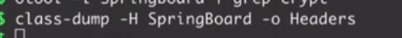

三种加壳方式
- VM 壳
- 加密 壳
- 压缩 壳
三种脱壳方式：目前用第三种
- Clutch
原理：posix_spawnp创建进程然后dump直接生成ipa包在设备，可以说是很方便了。这个是工具在使用的时候大部分应用会出报错，此外生成的包还需要自己拷贝。 - dumpdecrypted
地址： https://github.com/stefanesser/dumpdecrypted
原理： 通过手动注入然后启动应用程序在内存进行dump解密后的内存实现砸壳，这种砸壳只能砸主App可执行文件。有动态库不行
对于应用程序里面存在framework的情况可以使用conradev的https://github.com/conradev/dumpdecrypted，通过_dyld_register_func_for_add_image注册回调对每个模块进行dump解密。 - Frida-ios-dump 会被越狱检测出，直接闪退。
- 手动脱壳
- CrackerXI: iOS12 目前没法用dumpdecrypt、Clutch破壳。可以在cydia中直接安装CrackerXI+来破壳，更加方便快捷
CrackerXI使用地址:https://my.oschina.net/u/4624620/blog/4538834
前期准备：
- 手机越狱
iphone7 iOS14.5 非完美越狱
checkra1n 官网下载，
我是开启vpn开始的设置，不知道有没有影响。
进入uncOver 显示包内容 进入后 cd到终端
./checkra1n -c
勾选所有 显示上会有-v
错误不用管，等待就行。
视频地址：https://www.bilibili.com/video/BV14T4y1F7kr/ - 安装手机越狱插件
- AppleFileConduit “2” (ifunbox 沙盒查看目录用)
- OpenSSH (wifi连接用,需要手动修改密码，看工具篇)
一、Clutch 脱壳
Clutch: https://github.com/KJCracks/Clutch/releases/tag/2.0.4
下载后去掉版本号 拖入手机/usr/bin目录
可执行权限不足
chmod +x /usr/bin/Clutch
命令：Clutch -i ，查询当前可脱壳应用，只显示未脱壳。
Clutch -d 加数组
二、dumpdecrypted 脱壳

- 下载 dumpdecrypted
下载地址： https://github.com/stefanesser/dumpdecrypted
make编译出 dumpdecrypted.dylib 文件 - 将 dumpdecrypted.dylib 文件导入到手机的/var/root目录 （越狱设备root权限）ifunbox 工具拖入 ，注意：如果链接两台设备 ifunbox失效
- 修改环境变量 DYLD_INSERT_LIBRARIES
运行程序，输入 ps -A | grep 程序名称 找到进程id
cycript -p 6183 可进入调试，这里不需要调试，只需要目录路径。也可以进入后用mj的cycript工具找到路径
ps后路径为：
6183 ?? 0:00.00 /var/containers/Bundle/Application/E7039FC4-15B2-4EF0-8C16-878C04E34504/smoba.app/smoba
修改环境变量：
DYLD_INSERT_LIBRARIES=dumpdecrypted.dylib /var/containers/Bundle/Application/E7039FC4-15B2-4EF0-8C16-878C04E34504/smoba.app/smoba - 执行 DYLD_INSERT_LIBRARIES=dumpdecrypted.dylib /var/containers/Bundle/Application/E7039FC4-15B2-4EF0-8C16-878C04E34504/smoba.app/smoba 注意：var 前有/
- 查询是否已脱壳 otool -l smoba.decrypted | grep crypt
cryptid 0 代表已脱壳
查看BundleID
cat /var/containers/Bundle/Application/E7039FC4-15B2-4EF0-8C16-878C04E34504/smoba.app/Info.plist | grep CFBundleIdentifier -A 1
iOS10 以上需要重新签名 才能加载。
以上为旧版本脱壳
新版本脱壳参考 https://bbs.pediy.com/thread-263907.htm
su mobile 切换到 mobile权限
找不到文件
重签名：
列出可签名证书
security find-identity -v -p codesigning
为dumpecrypted.dylib签名
codesign –force –verify –verbose –sign “iPhone Developer: xxx xxxx (xxxxxxxxxx)” dumpdecrypted.dylib
其他总结：
最后su mobile，脱壳成功。我也是Meridian越狱，iPhone5s iOS10.3.2。
总结一下：
1、编译出dumpdecrypted.dylib，并且签名好。
2、将dumpdecrypted.dylib放到手机/usr/lib目录。
3、找到要脱壳应用的Documents路径，cd到Documents下。
4、su mobile切换到mobile用户。
5、DYLD_INSERT_LIBRARIES=/usr/lib/dumpdecrypted.dylib /var/containers/Bundle/Application/1F4B0FA7-4D39-4BA4-A563-E56B679975FB/XXXXXX.app/XXXXXX
正常就会脱壳成功了
https://iosre.com/t/ios-10-2-dumpdecrypted-file-system-sandbox-blocked-mmap-abort-trap-6/13878/8
三、Frida-ios-dump 一键砸壳
cydia添加软件源https://build.frida.re/
安装Frida
电脑配置参考文章
缺什么 model 就单独安装
https://iosre.com/t/frida-ios-dump/11640
https://iosre.com/t/topic/10890
下载后需要手动配置端口号及iphone密码，在dump.py文件中。
iproxy 10010 22 开启监听
由于Mac设备不兼容 这里指定用python3 ,在Frida-ios-dump目录中
python3 ./dump.py -l 查看手机中的应用名称及 bundleid
sudo python3 ./dump.py 包名/名称
执行完会解压到当前目录。
加sudo